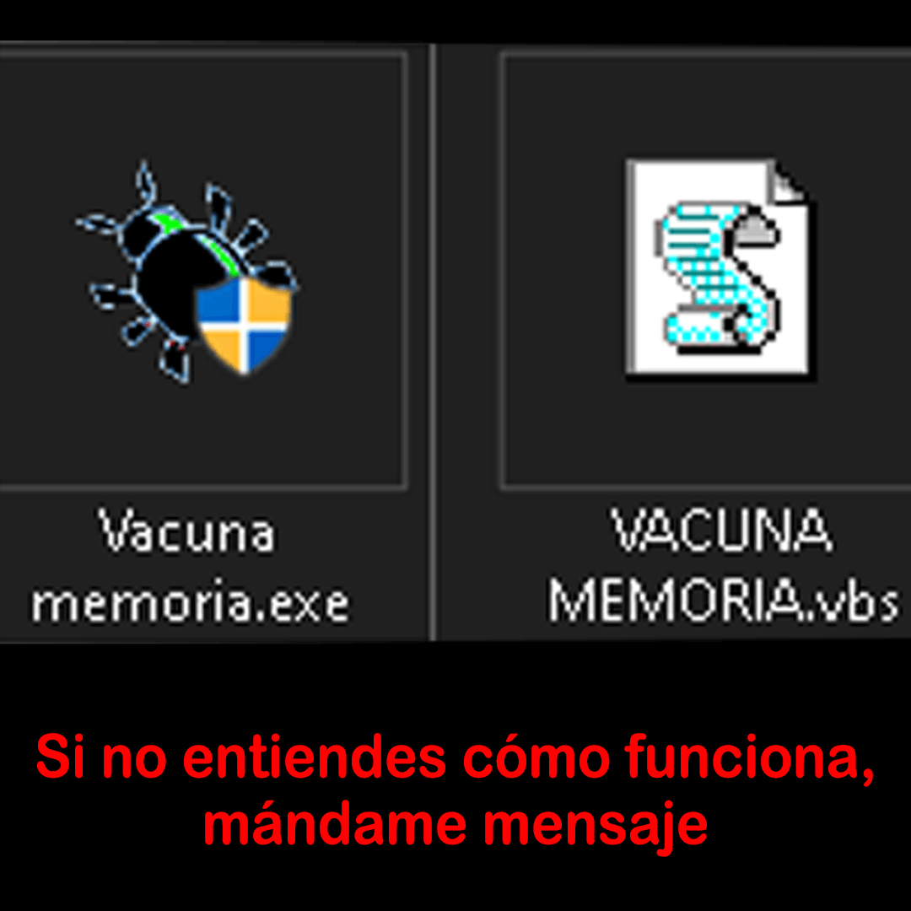

Formatea tus unidades USB con CMD en Windows
Formatear una memoria USB con Diskpart es una solución avanzada para reparar unidades que Windows no puede formatear de forma convencional, ya sea porque están protegidas contra escritura, corruptas, o tienen particiones inaccesibles. Es la mejor opción cuando el explorador de archivos falla, permitiendo limpiar profundamente la estructura de la memoria, eliminar virus, y restaurar su capacidad completa.
Sin embargo, es importante tener cuidado al usar Diskpart, ya que es una herramienta que puede causar pérdida de datos si se usa incorrectamente. Asegúrate de seleccionar la unidad correcta antes de ejecutar cualquier comando de formateo.
Ademas, es recomendable hacer una copia de seguridad de los datos importantes antes de proceder con el formateo.
En caso de que la memoria USB tenga un daño físico o a nivel de hardware, Diskpart no podrá repararla, y es posible que necesites considerar la compra de una nueva unidad.
Sin embargo, si en el explorador de archivos la unidad aparece sin detalles de almacenamiento, haces doble clic en ella y dice:
"Por favor, inserte un disco en la unidad USB (F:, G:, H:, etc.)"
O el comando clean en diskpart da esto:
DiskPart has encountered an error: Access is denied.
See the System Event Log for more information.
Esto puede deverse a:
- Corrupción del sistema de archivos: La tabla de particiones o el sistema de archivos (NTFS, FAT32, exFAT) está dañado.
- Daño físico/falla del controlador USB: La memoria flash interna de la USB ha fallado o no recibe la energía suficiente, lo que a menudo ocurre al usar puertos frontales de la PC.
Paso 1. Conecta el USB a tu PC y pulsa las teclas "Windows + R".
Paso 2. Escribe cmd en el cuadro de búsqueda y pulsa "Enter" para que aparezca Símbolo del sistema (CMD).
Paso 3. Escribe las siguientes líneas de comando una a una y pulsa "Enter" cada vez:
• diskpart
• list disk
• select disk + número (Sustituye el número por el número de tu unidad USB, ejemplo: select disk 1).
• clean
• create partition primary
• format fs=ntfs quick (También puedes sustituir NTFS por FAT32 o exFAT).
• exit
Video tutorial
Recupera archivos y carpetas ocultos
Este comando es la solución estándar cuando conectas una USB y tus archivos parecen haber "desaparecido" o se han convertido en accesos directos. Al ejecutarlo, los archivos originales vuelven a aparecer, permitiéndote identificar y borrar manualmente los archivos ejecutables maliciosos (como .inf, .bat o .exe sospechosos) que el virus creó.
Si tu memoria USB muestra archivos y carpetas ocultas, es posible que estén protegidos por atributos de sistema o que hayan sido ocultados por un virus. Para recuperar estos archivos, puedes usar el símbolo del sistema (CMD) en Windows. Aquí te explico cómo hacerlo:
Antes de ejecutarlo, asegúrate de estar posicionado en la letra de la unidad correcta (por ejemplo, escribiendo E: y pulsando Enter) para no modificar archivos del sistema de tu computadora.
1. Conecta tu memoria USB a tu computadora.
2. Presiona las teclas "Windows + R" para abrir el cuadro de diálogo "Ejecutar". Escribe "cmd" y presiona "Enter".
3. Escribe F: y pulsa "Enter". (Sustituye "F" por la letra de la unidad de la partición o dispositivo infectado).
4. En la ventana del símbolo del sistema, escribe el siguiente comando y pulsa "Enter":
attrib /d /s -r -h -s *.*
Este comando eliminará los atributos de oculto de todos los archivos y carpetas en la unidad USB, permitiéndote verlos nuevamente en el explorador de archivos.
5. Después de ejecutar el comando, abre el explorador de archivos y navega a tu unidad USB para verificar si los archivos y carpetas ocultos ahora son visibles.
Si los archivos siguen sin aparecer, es posible que la memoria USB esté dañada o que los archivos hayan sido eliminados. En ese caso, podrías considerar usar software de recuperación de datos para intentar recuperar los archivos perdidos.
Desglose del comando:
attrib: Es el comando que se utiliza para cambiar los atributos de los archivos y carpetas./d: Aplica el comando también a las carpetas (directorios), no solo a los archivos./s: Aplica el comando a todos los archivos y carpetas dentro del directorio actual y sus subdirectorios.-r: Elimina el atributo de solo lectura, permitiendo que los archivos puedan ser modificados o eliminados.-h: Elimina el atributo de oculto, haciendo que los archivos y carpetas sean visibles en el explorador de archivos.-s: Elimina el atributo de sistema, lo que permite que los archivos sean tratados como archivos normales en lugar de archivos protegidos del sistema.*.*: Es un comodín que indica que el comando debe aplicarse a todos los archivos y carpetas en la unidad USB.
Nota importante:
Ten cuidado al utilizar este comando. El uso inadecuado puede provocar daños en el sistema. Asegúrate de ejecutar el comando solo en la unidad USB afectada y no en otras unidades de tu computadora para evitar problemas.
Tengo un ejecutable que te ahorra escribir todos los comandos, lo puedes descargar aquí: Vacuna memorias

Son tres archivos: el .exe, el .vbs y el archivo llamado "Manuel" que es un documento de Word sin contenido que sirve para evitar que el virus con el mismo nombre pueda crearse.
Primero ejecuta el .exe, después copia y pega el archivo .vbs y el .docx dentro de tu memoria.
Por último, haz clic derecho sobre el .vbs (es la vacuna), abrelo y deja que termine de hacer su proceso.